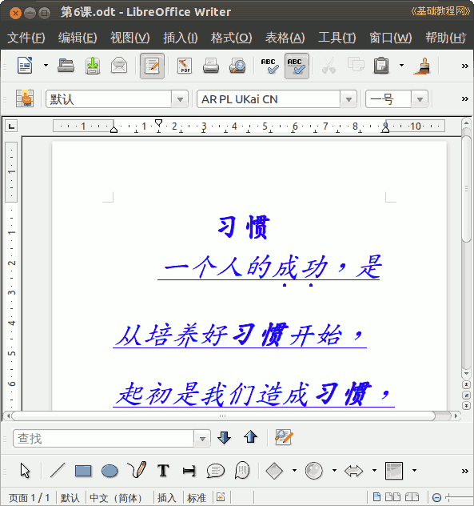

2012-2013 第二学期七年级文字处理和网页教学设计
作者：TeliuTe 来源：基础教程网
六、学会设置字符样式 返回目录 下一课
（一）教学设计
1、学习目标：学会设置字符样式
2、注意事项：绕过弯来
3、教学过程：
1）教师准备学案和板书；
2）学生整队进入，开机抄黑板上笔记；
3）教师讲解板书演示操作；
4）学生打指法、日志、完成操作；
5）教师打勾记录学生指法成绩，检查日志和操作；
注：学生抄完笔记就开始打指法、日志，老师讲完后再继续完成；
（二）板书设计(学生笔记)
第6课 学会设置字符样式
1. 常用的粗体,倾斜和下划线
2. 错误用删除线划掉
3. 重点词语加着重号
4. 其他自己积累
--
操作指南6
一个人的成功是从培养好习惯开始，最初是我们造成习惯，后来以后是习惯成就我们。
====
操作图示：

（三）课后记 2013-3-15 12:55
早上来还没想好，忽然电话过来说换到1、2节课
早上完早省事，忘记了今天是教研活动
--
开春学生都有些疲倦，似乎没睡够的感觉
让先把指法日志做好，检查一下玩的督促
--
把上节学的先自己设出来，然后试试今天的
字体字号颜色，段落缩进居中这些前面学的
--
着重号和删除线要到字符里设置，提前都没试一下
好在进去稍微找了下就看到了，记不住东西也是好久没用
--
保存还是迷糊，存过一次下次觉得下次就不用再存
举了个书包的例子，先买本书装上，再买本子还要装进书包
--
保存的两个要点，保存位置和保存名称也强调一下
经常用忽然就转过弯来，明白保存的含义就好
--
操作很快，要求归类放好，先对着笔记检查一下
一条一个操作，自己先看一下，尽量不要返工
--
1班还有些问题，做出来的篇章漏洞多
倾斜和下划线容易忘记，前面的段落也不熟练
--
上节课住校生没上，还是有一些影响
保存的概念讲了一下，似乎好一点只是记住要多保存
返回目录 下一课
本教程由86团学校TeliuTe制作|著作权所有
基础教程网：http://teliute.org/
美丽的校园……
转载和引用本站内容，请保留作者和本站链接。